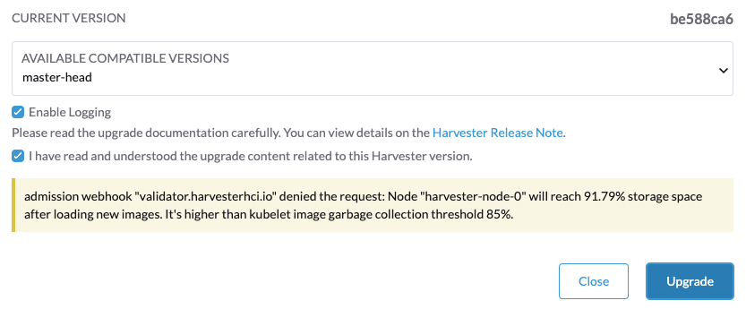

|
Ce document a été traduit à l'aide d'une technologie de traduction automatique. Bien que nous nous efforcions de fournir des traductions exactes, nous ne fournissons aucune garantie quant à l'exhaustivité, l'exactitude ou la fiabilité du contenu traduit. En cas de divergence, la version originale anglaise prévaut et fait foi. |
Dépannage
Présentation
Voici quelques conseils pour résoudre un échec de mise à niveau :
-
Vérifiez les notes de mise à niveau spécifiques à la version. Vous pouvez cliquer sur la version dans le tableau de la matrice de support pour voir s’il y a des problèmes connus.
-
Plongez dans la proposition de conception de mise à niveau. La section suivante décrit brièvement les phases d’une mise à niveau et les méthodes de diagnostic possibles.
Flux de mise à niveau
Le processus de mise à niveau comprend plusieurs phases.

Phase 1 : Provisionner la machine virtuelle du dépôt de mise à niveau
Le contrôleur SUSE Virtualization télécharge un fichier ISO de version et l’utilise pour provisionner une machine virtuelle de dépôt. Le nom de la machine virtuelle utilise le format upgrade-repo-hvst-xxxx.

La vitesse du réseau et l’utilisation des ressources du cluster influencent le temps nécessaire pour compléter cette phase. Les mises à niveau échouent généralement en raison de problèmes de vitesse du réseau.
Si la mise à niveau échoue à ce stade, vérifiez l’état de la machine virtuelle de dépôt et de son pod correspondant avant de redémarrer la mise à niveau. Vous pouvez vérifier l’état à l’aide de la commande kubectl get vm -n harvester-system.
Exemple :
$ kubectl get vm -n harvester-system
NAME AGE STATUS READY
upgrade-repo-hvst-upgrade-9gmg2 101s Starting False
$ kubectl get pods -n harvester-system | grep upgrade-repo-hvst
virt-launcher-upgrade-repo-hvst-upgrade-9gmg2-4mnmq 1/1 Running 0 4m44sPhase 2 : Précharger les images de conteneurs
Le contrôleur SUSE Virtualization crée des tâches qui téléchargent et préchargent des images de conteneurs depuis la machine virtuelle de dépôt. Ces images sont nécessaires pour la prochaine version.
Laissez un certain temps pour que les images soient téléchargées et préchargées sur tous les nœuds.

Si la mise à niveau échoue à ce stade, vérifiez les journaux des tâches dans l’espace de noms cattle-system avant de redémarrer la mise à niveau. Vous pouvez vérifier les journaux en utilisant la commande kubectl get jobs -n cattle-system | grep prepare.
Exemple :
$ kubectl get jobs -n cattle-system | grep prepare
apply-hvst-upgrade-9gmg2-prepare-on-node1-with-2bbea1599a-f0e86 0/1 47s 47s
apply-hvst-upgrade-9gmg2-prepare-on-node4-with-2bbea1599a-041e4 1/1 2m3s 2m50s
$ kubectl logs jobs/apply-hvst-upgrade-9gmg2-prepare-on-node1-with-2bbea1599a-f0e86 -n cattle-system
...Phase 3 : Mettre à niveau les services système
Le contrôleur SUSE Virtualization crée une tâche qui met à niveau les Helm charts des composants.

Vous pouvez vérifier la tâche apply-manifest en utilisant la commande $ kubectl get jobs -n harvester-system -l harvesterhci.io/upgradeComponent=manifest.
Exemple :
$ kubectl get jobs -n harvester-system -l harvesterhci.io/upgradeComponent=manifest
NAME COMPLETIONS DURATION AGE
hvst-upgrade-9gmg2-apply-manifests 0/1 46s 46s
$ kubectl logs jobs/hvst-upgrade-9gmg2-apply-manifests -n harvester-system
...|
Si la mise à niveau échoue à ce stade, vous devez générer un support bundle avant de redémarrer la mise à niveau. Le support bundle contient des journaux et des manifestes de ressources qui peuvent aider à identifier la cause de l’échec. |
Phase 4 : Mettre à niveau les nœuds
Le contrôleur SUSE Virtualization crée les tâches suivantes sur chaque nœud :
-
Grappes multi-nœuds :
-
Tâche
pre-drain: Effectue des migrations à chaud ou arrête des machines virtuelles sur le nœud. Une fois terminé, le service Rancher intégré met à niveau le composant d’exécution RKE2 sur le nœud. -
Tâche
post-drain: Met à niveau et redémarre le système d’exploitation.
-
-
Grappes à nœud unique :
-
Tâche
single-node-upgrade: Met à niveau le système d’exploitation et le composant d’exécution RKE2. Le nom de la tâche utilise le formathvst-upgrade-xxx-single-node-upgrade-<hostname>.
-

Vous pouvez vérifier les tâches en cours d’exécution sur chaque nœud en exécutant la commande kubectl get jobs -n harvester-system -l harvesterhci.io/upgradeComponent=node.
Exemple :
$ kubectl get jobs -n harvester-system -l harvesterhci.io/upgradeComponent=node
NAME COMPLETIONS DURATION AGE
hvst-upgrade-9gmg2-post-drain-node1 1/1 118s 6m34s
hvst-upgrade-9gmg2-post-drain-node2 0/1 9s 9s
hvst-upgrade-9gmg2-pre-drain-node1 1/1 3s 8m14s
hvst-upgrade-9gmg2-pre-drain-node2 1/1 7s 85s
$ kubectl logs -n harvester-system jobs/hvst-upgrade-9gmg2-post-drain-node2
...|
Si la mise à niveau échoue à ce stade, ne redémarrez pas la mise à niveau à moins d’y être invité par SUSE Support. |
Opérations courantes
Redémarrer la mise à niveau
|
Si la mise à niveau en cours échoue ou se bloque à [Phase 4: Upgrade nodes], ne redémarrez pas la mise à niveau à moins d’y être invité par SUSE Support. |
-
Générer un support bundle.
-
Cliquez sur le bouton Mettre à niveau sur l’écran Tableau de bord.
Si vous avez personnalisé la version, vous devrez peut-être créer à nouveau l’objet de version.
Arrêter la mise à niveau en cours
|
Si une mise à niveau en cours échoue ou se bloque à [Phase 4: Upgrade nodes], identifiez d’abord la cause. |
Vous pouvez arrêter la mise à niveau en effectuant les étapes suivantes :
-
Connectez-vous à un nœud de plan de contrôle.
-
Récupérez une liste de
UpgradeCRs dans le cluster.# become root $ sudo -i # list the on-going upgrade $ kubectl get upgrade.harvesterhci.io -n harvester-system -l harvesterhci.io/latestUpgrade=true NAME AGE hvst-upgrade-9gmg2 10m -
Supprimez le
UpgradeCR.$ kubectl delete upgrade.harvesterhci.io/hvst-upgrade-9gmg2 -n harvester-system -
Reprenez les ManagedCharts en pause.
Les ManagedCharts sont mis en pause pour éviter une course de données entre la mise à niveau et d’autres processus. Vous devez reprendre manuellement tous les ManagedCharts en pause.
cat > resumeallcharts.sh << 'FOE' resume_all_charts() { local patchfile="/tmp/charttmp.yaml" cat >"$patchfile" << 'EOF' spec: paused: false EOF echo "the to-be-patched file" cat "$patchfile" local charts="harvester harvester-crd rancher-monitoring-crd rancher-logging-crd" for chart in $charts; do echo "unapuse managedchart $chart" kubectl patch managedcharts.management.cattle.io $chart -n fleet-local --patch-file "$patchfile" --type merge || echo "failed, check reason" done rm "$patchfile" } resume_all_charts FOE chmod +x ./resumeallcharts.sh ./resumeallcharts.sh
Télécharger les journaux de mise à niveau
SUSE Virtualization collecte automatiquement tous les journaux liés à la mise à niveau et affiche la procédure de mise à niveau. Par défaut, cette option est activée. Vous pouvez également choisir de ne pas participer à ce comportement.

Vous pouvez cliquer sur le bouton Télécharger le journal pour télécharger l’archive des journaux pendant une mise à niveau.

Les entrées de journal seront collectées sous forme de fichiers pour chaque Pod lié à la mise à niveau, même pour les Pods intermédiaires. Le support bundle fournit un instantané de l’état actuel du cluster, y compris les journaux et les manifestes de ressources, tandis que le journal de mise à niveau préserve tous les journaux générés pendant une mise à niveau. En combinant ces deux éléments, vous pouvez approfondir l’analyse des problèmes lors des mises à niveau.

Après la fin de la mise à niveau, SUSE Virtualization cesse de collecter les journaux de mise à niveau pour éviter d’occuper l’espace disque. De plus, vous pouvez cliquer sur le bouton Fermer pour purger les journaux de mise à niveau.

|
Le déploiement Cependant, ces composants continuent de consommer des ressources du cluster et peuvent bloquer certaines opérations, telles que la mise à jour des paramètres du réseau de stockage (voir problème #9599). Pour libérer des ressources et débloquer les opérations, effectuez l’une des actions suivantes :
|
Pour plus de détails, veuillez vous référer au journal de mise à niveau HEP.
|
La taille par défaut du volume qui stocke les journaux liés à la mise à niveau est de 1 Go. Lorsque des erreurs se produisent, ces journaux peuvent complètement consommer l’espace disponible du volume. Pour contourner ce problème, vous pouvez effectuer les étapes suivantes :
|
Nettoyez les images inutilisées.
La valeur par défaut de imageGCHighThresholdPercent dans Configuration de Kubelet est 85. Lorsque l’utilisation du disque dépasse 85 %, le kubelet tente de supprimer les images inutilisées.
De nouvelles images sont chargées sur chaque nœud SUSE Virtualization lors des mises à niveau. Lorsque l’utilisation du disque dépasse 85 %, ces nouvelles images peuvent être marquées pour nettoyage car elles ne sont utilisées par aucun conteneur. Dans des environnements isolés physiquement, la suppression de nouvelles images du cluster peut interrompre le processus de mise à niveau.
Si vous rencontrez le message d’erreur Node xxx will reach xx.xx% storage space after loading new images. It’s higher than kubelet image garbage collection threshold 85%., exécutez crictl rmi --prune pour nettoyer les images inutilisées avant de commencer une nouvelle mise à niveau.

Vérifiez l’état d’une mise à niveau bloquée.
Si la mise à niveau est bloquée et que l’interface utilisateur SUSE Virtualization n’affiche aucun message d’erreur, effectuez les étapes suivantes :
-
Vérifiez les pods qui ont été créés pendant le processus de mise à niveau en utilisant la commande
kubectl get pods -n harvester-system | grep upgrade.Le script principal se trouve dans le pod
hvst-upgrade-xxxxx-apply-manifests-xxxxx. Si les enregistrements de journal incluent les messages suivants, le CRmanagedChartpourrait causer des problèmes.Current version: x.x.x, Current state: WaitApplied, Current generation: x Sleep for 5 seconds to retry -
Récupérez des informations sur le CR
bundleen utilisant la commandekubectl get bundles -A.Exemple :
NAMESPACE NAME BUNDLEDEPLOYMENTS-READY STATUS fleet-local fleet-agent-local 1/1 fleet-local local-managed-system-agent 1/1 fleet-local mcc-harvester 0/1 Modified(1) [Cluster fleet-local/local]; kubevirt.kubevirt.io harvester-system/kubevirt modified {"spec":{"configuration":{"vmStateStorageClass":"vmstate-persistence"}}} fleet-local mcc-harvester-crd 1/1 fleet-local mcc-local-managed-system-upgrade-controller 1/1 fleet-local mcc-rancher-logging-crd 1/1 fleet-local mcc-rancher-monitoring-crd 1/1